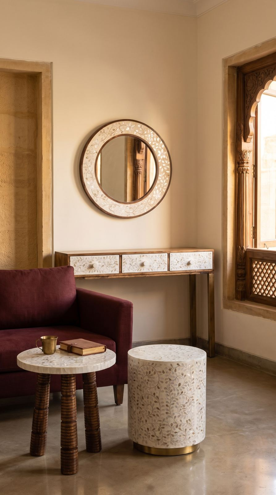
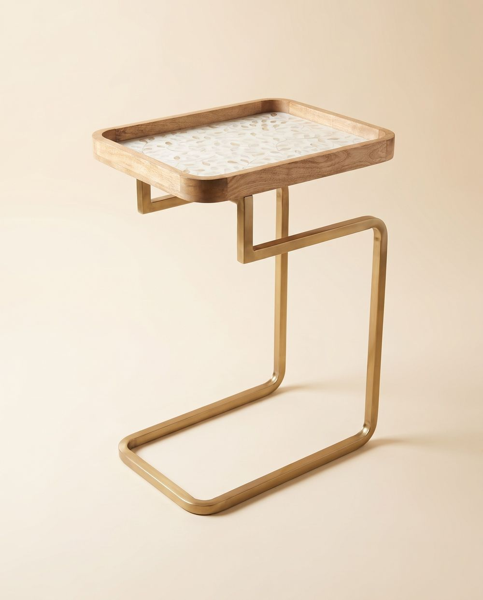
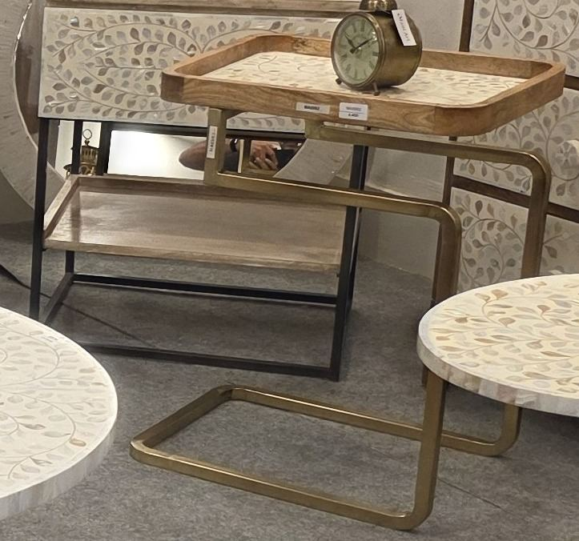
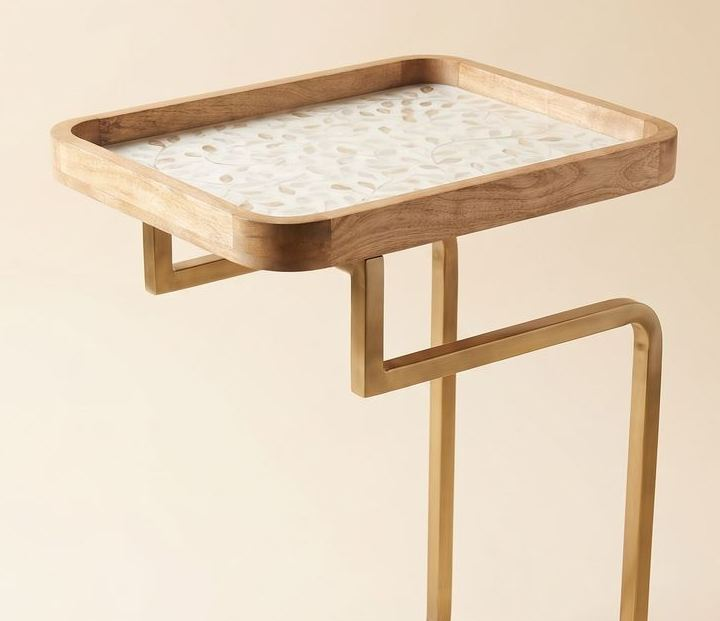

Pearl and brass
My shell was laid leaf by leaf, by hand, so I catch the light like a jharokha at dusk. Give me a cup, a lamp and the end of the day.
Price (placeholder)
Dust with a dry, soft cloth. No sprays on the shell. Coasters for hot cups.
India only. Leaves Jodhpur in 3–7 business days. 7-day returns; report any damage within 48 hours.
Concept images are AI-generated placeholders; showroom and product photos are real. Handmade, so each piece varies slightly.
Open in swipe view